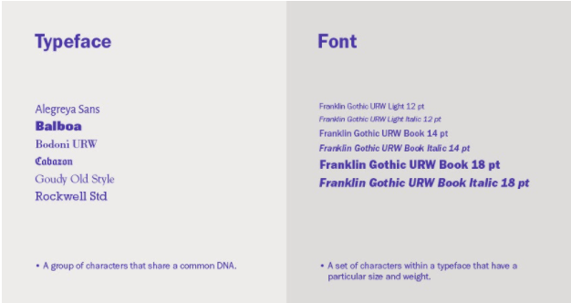

I denne lektion lærte vi hvordan typografi er overalt og historien bag typografiens historie. Typografi er meget mere end bare tekst. Det findes som fonts, kolonner, læsbarhed, layout, logo’er og billeder. Der findes primært 2 slags typografier - serif & Sans-serif:
Har fået sit navn fra sine ‘fødder’ - den tynde linje som afslutter grundstregen på et bogstav eller et symbol. Benyttes ofte som brødtekst, da fødderne gør større mængder tekst letlæselige. Fødderne danner nærmest en linie for øjet at følge. Kan opfattes som gammeldags.
Sans’ er fransk og betyder ‘uden’ - altså ‘uden serif’ eller ‘uden fødder’. Benyttes ofte til overskrifter, da den stramme moderne stil giver en god kontrast til den letlæselige serif. Har i lang tid været det foretrukne som brødtekst (copy) på moderne websites. (Carsten Kjeldsen Bogner, fremlæggelse om typografi, https://eadania.mrooms.net/mod/resource/view.php?id=158781&redirect=1, 25-9-20, besøgt d. 04/12/20)
Hvad er forskellen på et typeface og en font? Et typeface er en gruppe tegn, som har en fællesbetegnelse - som f.eks. at Alegreya Sans er et typeface som stammer fra Rockwell Standard, hvor en font er en bestemt samling af glyffer, som stammer fra et typeface.
(https://design.tutsplus.com/articles/the-ultimate-guide-to-basic-typography--cms-33460)
Under lektionen fik vi også til opgave at lave en præsentation om forskellige typefaces, fonts og om hvordan de kom til verden.
Det første løse typefaces var kendt som Blackletters, som var meget brugt i middelalderen, men hurtigt faldt fra igen, da dens tunge, mørke og nogle gange ulæselige font simpelthen ikke gik mere, da der kommer mere læselige fonts, som virkede bedre for øjnene. Her træder humanist font typen ind på banen
Humanist font typen er fra 1400-tallet i perioden hvor begrebet humanisme og dens værdier var meget udbredte (1300-tallet til 1600). . Humanist typefacen kom i 1460’s og 1470s, og var opbygget, ikke på den mørke og tunge form som Blackletters, men i stedet en mere lys og mere åben form inspireret af de italienske humanistforfattere. Humanist typefacen var på samme tid også den første roman types. Humanist serif (tidsperiode) Humanist fonttypen er fra 1400-tallet i perioden hvor begrebet humanisme og dens værdier var meget udbredte (1300-tallet til 1600).
Humanist (Serif)
Humanist fonts begyndte at blive hyppigt brugt i starten af 1930 for at modkæmpe de alt for geometriske skrifttyper. De var inspireret af renæssance skrifttyperne. Humanist stilen har en moderat stroke kontrast, ulige Widths, et klassisk udseende og er behagelig for øjnene at læse.
Selve Humanist stilen eller ”Sans-Serif” blev grundlagt i Italien af de middelalderlige skriftkloge, som lavede så godt et design at det ændrede selve ideen bag font designs. Pointen bag Serif eller Sans-Serif er at looket bag fonten er, at det skal se mere menneskeligt ud, mere organisk end andre skrifttyper, så det skiller sig mere ud. (David Berglash, DT&G)
Mange gange ser man også klassisk, traditionelle bøger eller artikler med en Humanist Serif typeface. Som reelt har font familier en gruppe relaterede fonts som passer sammen i ”Weights orientation, width etc..” men ikke i selve designet.
Nogle eksempler kunne bl.a. være:
- Garamond
- Centaur
- Adobe Jenson
Grotesque fonts er en bred definition af sans Serif fonts som blev produceret omkring 1815. Disse fonts er også kaldet "Grotesk" og "Gothic". Grotesque fonts kan kendes ved at de har et lidt groft udseende og visuel karakter.
De har mere personlighed i forhold til de traditionelle moderne typefaces som Neo-Grotesques (helvitica). Grotesker er normalt geometriske i design med enkle bogstav formularer og ret jævn streg vægt. Grotesker er de første sans Serif fonte der blev populære og brugt som små bogstaver i det latinske alfabet.
De første sans Serif typefaces blev lavet af støberiet af William Caslon til Oxford University Press. Sans Serif blev senere brugt til blinde børn i 1785. Grotesque fonts fik deres navn, fordi folk syntes, at de så groteske og grimme ud.
Eksempler på familie fonts til Grotesque kunne være:
- Cerbri Sans
- Saveur Sans
- Bucksaw Grotesque
- Quartz Grotesque
Kildeliste:
- http://www.graphic-design.com/Type/bergsland/humanist.html
- https://elearningbrothers.com/blog/the-4-main-elearning-font-categories/